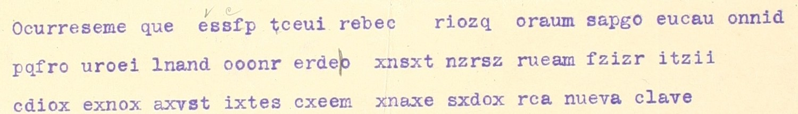

At a glanceCiphertext-only break · partial (80% of the cipher)
- The telegrams
- CMXV.16.1551.3-4 (18 April 1911, Adolfo González, San Antonio, to W. Olliphant, i.e. Federico González Garza, El Paso; ends with the clear words “nueva clave”), CMXV.16.1561.5-13 (19 April, González Garza to Adolfo González) and CMXV.16.1569.3-10 (20 April, Adolfo González to Olliphant).
- Where
- Centro de Estudios de Historia de México (CEHM), Fundación Carlos Slim, Archivo Federico González Garza, Fondo CMXV. Part of catalogue entry 1462; not on DECODE. None carries a decipherment or is in the typed list of period decipherments CMXV.18.1795.1.
- The cipher
- A turning grille (Fleissner) of 8 × 8 cells with 16 holes: each block of 64 cipher letters is written row by row, read through the holes, and the grille is turned a quarter turn clockwise four times; the last block is filled with nulls. No card of the fonds reads these telegrams.
- How it was read
- An AI model proposed the grille from the ciphertext of the three telegrams, with a fourth telegram held out. We checked it with a decoder of our own. Five blocks of 64 letters read as Spanish with no insertion or deletion; the other blocks need one declared repair each.
- What it says
- Forces could get water from the north-east; Dr is on the outskirts of Juárez, ready to attack, and an armistice is probable; an American officer thinks an assault on Juárez inadvisable because the town is mined and advises attacking in three eight-hour shifts.
- Still open
- The pre-registered measure on the held-out telegram failed (0.520 against 0.70), so the grille is not validated. Counted by words, 48 of 60 give sense (80%); six letters in the five good blocks are corrected by the sense and two single S stay unresolved.
- Credit
- Brice Dudout (with AI language-model agents) transcribed the telegrams, set the protocol, ran the measure and checked the grille; an AI model (one API run, named in the contributor’s files) proposed it. Daniel Bourdeau: catalogue entry 1462. The Clave G.A. telegrams of the same traffic are on another page, a different cipher.
01 The telegrams
On 18 April 1911 Adolfo González ended a telegram in a new cipher with the clear words “nueva clave”. On 19 April González Garza asked him to go on using the old key because it was quicker (the telegram CMXV.16.1561.7-13, read with the Clave G.A. card). The three telegrams of these days are in letters with Spanish letter frequencies and many X, Y and Z, and no card of the fonds reads them; the contributor’s own attempts (simple columnar transposition at widths 2–15, Caesar shifts, every card of the fonds) failed. 1551.3-4 and 1569.3-10 are received telegrams (each carries a check mark of the telegraph company) and 1561.5-13 is a copy of the outgoing text.
The typed list of period decipherments, CMXV.18.1795.1, has a note on its p. 11, after the San Antonio telegrams of 17–18 April: “espacio para añadir 6 telegramas por traducir”. These telegrams are probably among those six, but nothing says so.

02 The grille
The grille has 16 holes in position 1; the four quarter turns bring every cell of the 8 × 8 square under a hole once, so the 64 letters of a block are taken in 4 × 16. The holes were derived from the nulls: the 17 X and Z of the second block of 1551.3-4 fall in the cells of the fourth position, one per rotation orbit (the contributor’s account; he adds that one orbit had two X and the reading decided it). The AI model proposed it in one API run on the three telegrams, the earlier failed attempts and the fonds’ key cards, with a fourth telegram, CMXV.16.1561.3-13, kept back.
Two telegrams are not a multiple of 64 letters: 1561.5-13 has 129 letters (one too many), 1569.3-10 has 191 (one lost, in IRXNO). After the blocks that fall before the slip, the next block comes out shifted and unreadable; one letter deleted (the 73rd of 1561.5-13) and one restored (an r after IR in IRXNO) bring the rest back. Both repairs were chosen while looking at the text and are declared.
03 The test, which failed
Before anything was sent to the model, the whole telegram CMXV.16.1561.3-13 (Adolfo González to Olliphant, 19 April, 127 letters, no gloss) was held out; its file was hashed and a leak check found none of its groups in the files sent. The statistic was the share of the decrypted letters covered by Spanish words of four letters or more, against 200 random grilles of the same family and 200 shuffled copies; the pass mark was 0.70 and a margin of 0.30 over the best control, run once.
The measure failed: 0.520 against 0.70, margin +0.118 against +0.30 (random grilles at most 0.402, shuffled texts at most 0.299). The held-out telegram has lost a letter in its group of four, YPXB, so its second block is shifted; its first block, 64 letters of a telegram never sent to the model, reads “opino armisticio equivaldria destruccion fuerzas insurgentes deben atac…”. A later trial with the model’s own rule for a short group gives a readable second block, but it was run after the measure and is not counted, and the held-out telegram is spent. The contributor reports the failure in these terms; so do we. Order of events (hashes frozen first, single commits) is by the contributor’s record. The held-out cipher is not in the repository, only its hash, so a third party cannot repeat the measure.
What supports the grille instead is not a validation: five blocks of 64 letters read as fluent Spanish, with one grille across three telegrams, 18 to 20 April and both directions of the traffic; the nulls fall where a grille puts them (1569.3-10 ends with xxxzzz and then the run a to j); and the first block of the held-out telegram reads. Our own check: a decoder written from the grid reproduces every block of the contributor’s decryption, and none of 2,000 random grilles of the same family (one hole per rotation orbit) scores as well on the five good blocks (Spanish 4-gram per letter: −4.65 for this grille, −7.10 for the best random one, −8.06 on average). The grille was fitted to these blocks, so this shows that it fits them, not that it is validated. “No repair” means no insertion or deletion: six letters in those five blocks are still corrected by the sense (listo, atacar, nuestro, por, contrario and a doubled v in convendría), and two more (mensagero, armisticio) in the block that needs the declared deletion.
04 The reading
ocurréseme que FUERZAS PODRÍAN RECIBIR AGUA POR NORDESTE. COMUNÍQUELO. ESPERO QUE CON FONDOS REMITIDOS TENDÁN SUFICIENTE. CASO CONTRARIO AVÍSEME. nueva clave. (18 April)
In English: it occurs to me that the forces could get water from the north-east; pass it on. I hope that with the funds sent they will have enough; if not, let me know. (“Agua” could also be the town of Agua Prieta; the plain sense is kept.)
CLAVE S. DR. GOTERAS JUÁREZ, LISTO ATACAR. COMUNICADO CON EL S. TERRAZAS. NUESTRO MENSAGERO: PROBABLE ARMISTICIO. FONDOS insufientes. (19 April)
In English: key. S[eñor?] Dr on the outskirts of Juárez, ready to attack. Communicated with S[eñor?] Terrazas. Our messenger: armistice probable. Funds insufficient. “Goteras” is the Mexican word for the outskirts of a town.
OPINA OFICIAL AMERICANO INCONVENIENTE ASALTO JUÁREZ POR ESTAR MINADO. CONVENDÍA MÁS ATACAR INCESANTEMENTE, DIVIDIENDO EJÉRCITO TRES PARADAS OCHO HORAS CADA UNA. ASÍ LOGRARÁSE RENDIR GUARNICIÓN POR CANSANCIO. (20 April)
In English: an American officer thinks an assault on Juárez inadvisable because it is mined; it would be better to attack without pause, dividing the army into three shifts of eight hours each, so that the garrison would surrender from exhaustion. (The contributor adds that from 19 April Madero’s forces stood before Ciudad Juárez; that background is not from the sources of this page and was not checked here.)
Counted by the README rule, strictly (a word with a letter corrected by the sense, a restored word and an unresolved one are not read): 1551.3-4, 16 of 17 words; 1561.5-13, 9 of 17 (six words are probable: five with one letter corrected by the sense and CLAVE, whose word cut is uncertain; two single S are unresolved); 1569.3-10, 23 of 26 (one word with a doubled letter across a block boundary, one with a t for p, one restored: the r of guarnición, lost in IRXNO). Together 48 of 60 words, 80%. The contributor counts the nine probable words as read and gets 95%. Under the bar either way for the strict rule; the grille is not validated, so the telegrams are read in part.
05 What remains uncertain
- The grille is not validated: the only held-out telegram is spent, and no other telegram in the grille is known among the 136 coded pieces of the fonds harvested so far.
- In 1561.5-13 letters 29, 38, 57, 68 and 87, the extra letter near the 73rd, and the two single S are to be checked on the original.
- Two small pencil letters “v e” above ESSFP on 1551.3-4 are not explained by the grille; too short.
- No second reader has compared the transcriptions with the CEHM images; they may not be redistributed, and the CEHM image server failed TLS verification in the integrating session, so no image was compared there either.
- Who “S.” and “Dr” are is not read from the telegrams here; “Dr” is probably Madero (see the other page).
Full texts
The transcription and the decryption of every document on this page, so that the reading can be used and checked. Short files are shown here; all are in the repository.
Three telegrams of 18-20 April 1911 in the turning grille (CEHM-Carso CMXV.16.1551.3-4, 1561.5-13, 1569.3-10) read in part
San Antonio and El Paso, 18-20 April 1911, before Ciudad Juárez: water for the forces and funds; Dr ready to attack Juárez, armistice probable, funds insufficient; an American officer advises against assaulting a mined Juárez and for attacking in three eight-hour shifts. Key not validated.
Builds coherent sentences, but under the read bar of 95% of words read as sense (80% here); the holes are marked in the reading.
Transcription
# CEHM-Carso, Fondo CMXV (Archivo Federico González Garza). Three telegrams of 18-20 April 1911 in the turning grille. # Transcribed by Brice Dudout from the CEHM viewer images (study copies, not redistributed), hashed before any key was tried # (T-sanantonio-duron-v1.txt 100db048...). Cipher groups in capitals, clear words of the telegram in lower case, as typed. ## CMXV.16.1551.3-4: Adolfo González (San Antonio) to W. Olliphant, Alberta Hotel Room 16, El Paso, 18 April 1911. ## Texas Telegraph Company, received at El Paso; check "30d c 30". Two small pencil letters "v e" above ESSFP (not explained). ## The 4th letter of ERDEP has a vertical stroke: p or b. ocurreseme que ESSFP TCEUI REBEC RIOZQ ORAUM SAPGO EUCAU ONNID PQFRO UROEI LNAND OOONR ERDEP XNSXT NZRSZ RUEAM FZIZR ITZII CDIOX EXNOX AXVST IXTES CXEEM XNAXE SXDOX RCA nueva clave Adolfo Gonzalez ## CMXV.16.1561.5-13: Federico González Garza (El Paso) to Adolfo González, 437 Main Ave., San Antonio, 19 April 1911. Copy of the outgoing telegram. CTOCE MURLA RURAN VEAEZ IZSAC DLRCG SSNTA UDAOO OCSTA OTTNE ERRAO LEMAA SSRJX XYLYZ AZANR XXMSY AIYGZ ZYEXX RTOIP XCYIY ZZXXR OYYOF ZOZYB YXANY ZDZBO XLSE insufientes ## CMXV.16.1569.3-10: Adolfo González (San Antonio) to W. Olliphant, Alberta Hotel, El Paso, 20 April 1911. ## Texas Telegraph Company, received 7:07 pm; check "155: D: Rb. J. 64/32". IRXNO has five letters only (second letter corrected in pen, read r). TREOEA ISPCTS AIANNA ARLOOM TFIINC ICNOOA JDUINA OAVREC ELZOAN NTIVME OENRVT IVRDIE ENSICN EDEPRA NSIRDA AMNAAT DEOAES JSMEOA ERNCCT IHATOT EHCDOA IRXNO XIGXRR ZCAAIS RZCZOA AANDSA EUBRCE CDAENN NSFADA IGNACH SRIIGJ IUOLAO Adolfo Gonzalez
Decryption
# The grille of key.txt applied mechanically; each block of 64 cipher letters gives four quarters of 16 letters (positions 1-4). # Lines marked "as transcribed" use the cipher exactly as in transcription_grille.txt, with no repair. # The two repairs are declared: 1561.5-13 has 129 letters (one too many) and 1569.3-10 has 191 (one lost). CMXV.16.1551.3-4 (128 letters, 2 blocks), as transcribed, no repair: block 1: fuerzaspodrianre cibiraguapornord estecomuniqueloe speroqueconfondo block 2: sremitidostendra nsuficientecasoc pntrarioavisemex xxzzzzzxxxxxxxxx CMXV.16.1561.5-13 (129 letters), as transcribed, no repair: block 1: clavesdrgoterasj uarezlcstoataear comunicadoconels terrazasnuastrom block 2: shifted by the extra letter, not readable CMXV.16.1561.5-13, repair: the 73rd letter (second A of AZANR) deleted; chosen while looking at the text: block 2: lnsageroprobable armiyticiofondos xyzxyzxyzxyzyyzx xyzxyzxxyzxyzxyz CMXV.16.1569.3-10 (191 letters, 3 blocks less one letter), as transcribed, no repair: block 1: opinaoficialamer icanoinconvenien teasaltojuarezto restarminadoconv block 2: vendriamasatacar incesantementedi vidiendoejercito tresparadasochoh block 3: shifted by the lost letter, not readable CMXV.16.1569.3-10, repair: r restored after IR in IRXNO (129th letter); chosen while looking at the text: block 3: orascadaunaasilo graraserendirgua rnicioncansancio xxxzzzabcdefghij
Reading
# Three telegrams of 18-20 April 1911 in the turning grille, the text read (Spanish) Deciphered words in capitals; (x>y) = letter given by the grille x, read y; [x] = letter restored; the clear words of the telegram in lower case. Read in part: the key is not validated (`VALIDATION_grille.md`). ## CMXV.16.1551.3-4, Adolfo González to Olliphant, 18 April 1911 ocurréseme que FUERZAS PODRÍAN RECIBIR AGUA POR NORDESTE. COMUNÍQUELO. ESPERO QUE CON FONDOS REMITIDOS TENDRÁN SUFICIENTE. CASO C(p>o)NTRARIO AVÍSEME. nueva clave. 17 words: 16 sure, 1 probable (contrario: the one wrong letter is the P of ERDEP, which the transcription already marks as doubtful). Nulls: 12 x, 5 z. ## CMXV.16.1561.5-13, González Garza to Adolfo González, 19 April 1911 CLAVE S. DR. GOTERAS JUÁREZ, L(c>i)STO ATA(e>c)AR. COMUNICADO CON EL S. TERRAZAS. NU(a>e)STRO M(l>e)NSAGERO: PROBABLE ARMI(y>s)TICIO. FONDOS insufientes. 17 words: 9 sure (Dr, goteras, Juárez, comunicado, con, el, Terrazas, probable, fondos), 6 probable (clave: the word cut is uncertain; listo, atacar, nuestro, mensagero, armisticio: one letter corrected each), 2 unresolved (the two single S, perhaps "señor"). The second block needs the declared deletion of one letter. "Goteras" is the Mexican word for the outskirts of a town. ## CMXV.16.1569.3-10, Adolfo González to Olliphant, 20 April 1911 OPINA OFICIAL AMERICANO INCONVENIENTE ASALTO JUÁREZ (t>p)OR ESTAR MINADO. CONV(v)ENDRÍA MÁS ATACAR INCESANTEMENTE, DIVIDIENDO EJÉRCITO TRES PARADAS OCHO HORAS CADA UNA. ASÍ LOGRARÁSE RENDIR GUA[R]NICIÓN [por] CANSANCIO. 26 words: 23 sure, 2 probable (por: the grille gives t; convendría: v doubled across the block boundary), 1 restored (guarnición: the R lost in IRXNO, declared repair). Nulls: xxxzzz then a b c d e f g h i j. ## Count (Daniel Bourdeau's 95 % rule, words read as sense) | Telegram | words | sure | probable | restored | unresolved | read | |---|---|---|---|---|---|---| | 1551.3-4 | 17 | 16 | 1 | 0 | 0 | 100 % | | 1561.5-13 | 17 | 9 | 6 | 0 | 2 | 88 % | | 1569.3-10 | 26 | 23 | 2 | 1 | 0 | 96 % | | total | 60 | 48 | 9 | 1 | 2 | 95 % |
Translation
# Translation (three telegrams of 18-20 April 1911, turning grille; read in part, key not validated)
**CMXV.16.1551.3-4, 18 April, Adolfo González (San Antonio) to Olliphant (El Paso).** It occurs to me that the forces could get water from the north-east: pass it on. I hope that with the funds sent they will have enough; if not, let me know. New key. ("Agua" could also be the town of Agua Prieta, Sonora, lost by the rebels on 17-18 April; the plain sense "water" is kept.)
**CMXV.16.1561.5-13, 19 April, González Garza (El Paso) to Adolfo González (San Antonio).** Key. S[eñor?] Dr [is] on the outskirts of Juárez, ready to attack. [We] communicated with S[eñor?] Terrazas. Our messenger: armistice probable. Funds insufficient.
**CMXV.16.1569.3-10, 20 April, Adolfo González to Olliphant.** An American officer thinks an assault on Juárez inadvisable because it is mined. It would be better to attack without pause, dividing the army into three shifts of eight hours each; in this way the garrison would be made to surrender from exhaustion.
Context: from 19 April Madero's forces stood before Ciudad Juárez, held by the federal general Navarro; that day González Garza asked Navarro to surrender the town, and the armistice talks began on 20-22 April. Juárez fell on 10 May 1911. "Dr" is the cover name for Madero in this traffic (`NOTES.md`).Key: key.txt
06 Sources
- CEHM-Carso, Fondo CMXV (Archivo Federico González Garza): CMXV.16.1551.3-4, 16.1561.5-13, 16.1569.3-10 (and the held-out 16.1561.3-13, not published); the typed list CMXV.18.1795.1 (p. 11); study copies from the CEHM viewer, not reproduced here.
- Transcriptions, protocol, measure, independent decoder and readings by Brice Dudout with AI language-model agents (pull request #442), in
targets/nuevaclave1911; the grille was proposed by an AI model in one API run.
The grille, the transcriptions, the readings and the failed measure are in targets/nuevaclave1911.
Cite this page
Brice Dudout and Daniel Bourdeau, “The “nueva clave”: three Maderista telegrams of April 1911”, Cyphersolver, posted 12 November 2026, https://cyphersolver.com/nuevaclave1911.html.